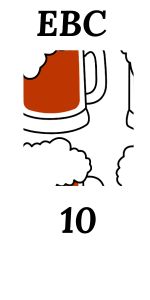

Rauchbier
É uma cerveja autoral, inspirada nas antigas cervejas, antes da Era Industrial, recriando sabores de forma original e valorizando o potencial criativo e inovador do cervejeiro.


É uma cerveja autoral, inspirada nas antigas cervejas, antes da Era Industrial, recriando sabores de forma original e valorizando o potencial criativo e inovador do cervejeiro.
Cerveja forte, clara, de trigo, defumada.
A descrição acima já indica que a experiência será intensa e saborosa. O aroma inicial apresenta frutas e madeira de forma intensa, com caráter cítrico que lembra laranja, combinando cravo, canela e sândalo. O aroma de fumaça que normalmente é associado a carnes e queijos, se faz presente de forma intensa, acompanhada da presença frutada da fermentação.
O sabor da cerveja é complexo e frutado, inicialmente doce, logo trazendo o caráter refrescante e frutado das cervejas de trigo, com o aspecto defumado bastante evidente, resultado da defumação que a própria cooperativa desenvolveu, utilizando madeiras aromáticas da família das frutas cítricas.
Mesmo complexa e intensa, com gosto que lembra geleias de frutas, a cerveja tem corpo leve e textura refrescante.
A cerveja tem cor âmbar, com espuma de cor marfim e boa formação.
É uma cerveja autoral, inspirada nas antigas cervejas, antes da Era Industrial, recriando sabores de forma original e valorizando o potencial criativo e inovador do cervejeiro.
O fogo acompanha a humanidade desde o seu início, trazendo luz, calor e outras funções, como o cozimento. A produção de cerveja utiliza bastante calor em várias etapas. Uma delas é a secagem do malte, que até o século 18, era feita com o uso do calor do sol e do
fogo direto.
Diferentes madeiras produzem efeitos distintos de aroma e sabor, combinando outros fatores como temperatura e tempo de exposição. Até a invenção do torrador de tambor (drum roaster), os cereais malteados tinham um toque defumado, mais ou menos evidente.
Para resgatar os sabores das cervejas antigas, desenvolvemos um defumador de malte, reciclando equipamentos descartados de forma econômica e inteligente.
A defumação dos nossos grãos é feita com madeiras aromáticas como laranjeira, utilizada tradicionalmente no interior do Rio Grande do Sul para defumar linguiça.
Esta cerveja tem um potencial grande para harmonizações, combinando com pratos fortes e cheios de sabor, aproveitando critérios de harmonização que sejam similares, opostos ou complementares.